As the holidays approached in 1848, the atmosphere on the Miami University campus in Oxford, Ohio was gloomy and uncertain. This was the mood in which Robert Morrison suggested to a close friend and classmate, John McMillan Wilson, that they consider putting together a new collegiate brotherhood. Morrison and Wilson sought out underclassman that they believed they would be dedicated to their cause. Juniors John Wolfe Lindley and Robert Thompson Drake were approached, as were sophomores Ardivan Walker Rodgers and Andrew Watts Rogers, all of whom accepted the concept. All six men were among the group of Miami students who did not attempt to go home to join their families for the holidays. Winter travel conditions were difficult and could often prove perilous due to harsh winter conditions. The need for close companionship was evident when the six met the night of December 26, 1848 in Wilson's second floor room in Old North Hall. They firmed up their desire to establish a brotherhood. They met two nights later in the same room to consider an appropriate motto and constitution - The Bond of the Phi Delta Theta. This is the same Bond that every initiate into the Phi Delta Theta Fraternity has since signed. On December 30, the “Immortal Six” put their signatures to The Bond of the Phi Delta Theta. Their names remain a vital part of the rituals that continue today in every chapter room across the United States and Canada. The Bond has remained unchanged from that day to this.
Phi Delta Theta was built on three pillars that haven't budged an inch since the Fraternity was founded by “The Immortal Six” way back in 1848 at Miami University. The pillars are: The cultivation of friendship among its members, the acquirement individually of a high degree of mental culture, and the attainment personally of a high standard of morality. Shortened, we refer to the principles as Friendship, Sound Learning, and Rectitude. Helping every individual to meet his true potential is the bedrock of the Phi Delta Theta Fraternity. By celebrating each person's true self, and by learning from each other's strengths while helping to improve each other's weaknesses, every member of Phi Delta Theta develops into a greater version of himself than he could ever on his own. Rather than try to find young men to “mold” into some ideal, we celebrate the uniqueness of each individual and, through encouragement, values, example and brotherhood, empower every brother to exceed his personal expectations.
Today, Phi Delta Theta is approaching 200 chapters, has approximately 178,000 living alumni, and boasts 100 alumni clubs in the United States and Canada. The Fraternity operates from the General Headquarters building on South Campus Avenue, across from Miami University in Oxford, Ohio.
The first man to walk on the moon, six MLB hall-of-famers, eight Pulitzer Prize winners, President of the United States, and many more.
The Phi Delta Theta Fraternity was founded in 1848 by 6 young men at Miami University of Ohio, upon the pillars of moral rectitude, sound learning and the cultivation of friendship between its members. The organization's focus has been to help its members become "the best version of themselves" long-term celebrating the uniqueness of each member rather than forcing members to conform to some model or standard. This Fraternity re-established a chapter on Allegheny's campus in early 2000's and has been steadily growing since.